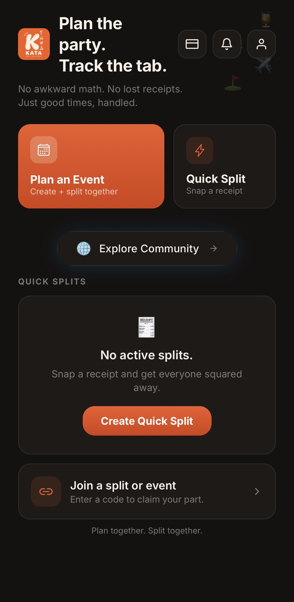

Plan the Experience
Create the event, invite the group, and organize every stop.
Keep All Tabs Accountable
No awkward math. No lost receipts.
Just good times, handled.
Build the plan, invite the group, organize every stop, track shared expenses, and close the tab without slowing down the experience.
Private testing begins soon.
Follow @joinkatadotcom
Events, tabs, receipts, and memories — all in one place.
The problem
Plans get buried in chats. Stops change. Receipts disappear. Nobody remembers who paid. KATA keeps the entire experience together.
Create the event, invite the group, and organize every stop.
Upload receipts, claim purchases, and know who owes what.
Plans, activity, balances, and changes stay in one place.
Close the event with clear balances and supported payment options.
How KATA works
Create the event
Add the name, date, people, and first stops so everybody knows what is happening before the day begins.

Every kind of plan
KATA is made for the whole experience — from the first invite to the final balance.
Modern settlement
KATA is being built for modern groups: friends traveling together, remote teams meeting in person, and communities creating experiences across borders.
USDC settlement on Solana can help groups close shared tabs quickly without turning KATA into a complicated crypto product.
Ready to settle across the group
Roadmap
The focus is a useful product, a strong early community, and a repeatable experience people want to bring into real life.
The early community
Join the early community, test new features, share feedback, and help build a better way to experience life with your people.
FAQ
The product is still being built, but the mission is simple: keep the plan and the tab accountable without killing the vibe.
KATA is a social planning and shared-expense app for group experiences. It brings events, stops, receipts, balances, and group activity into one place.
Keep All Tabs Accountable.
No. KATA combines event planning, invitations, stops, group updates, receipts, shared expenses, and settlement.
Dinners, birthdays, vacations, workouts, road trips, nightlife, golf outings, business travel, and almost any group experience.
KATA is currently in development and preparing for private testing. Join the waitlist for early-access updates.
The goal is for KATA to remain approachable for mainstream users. USDC settlement is part of the product vision, not a requirement for understanding or enjoying the core experience.
The partner program is being developed for restaurants, activities, hotels, transportation, fitness studios, and other destinations that improve group experiences.
Get there early
Create the event. Bring the group. Let KATA handle the details.